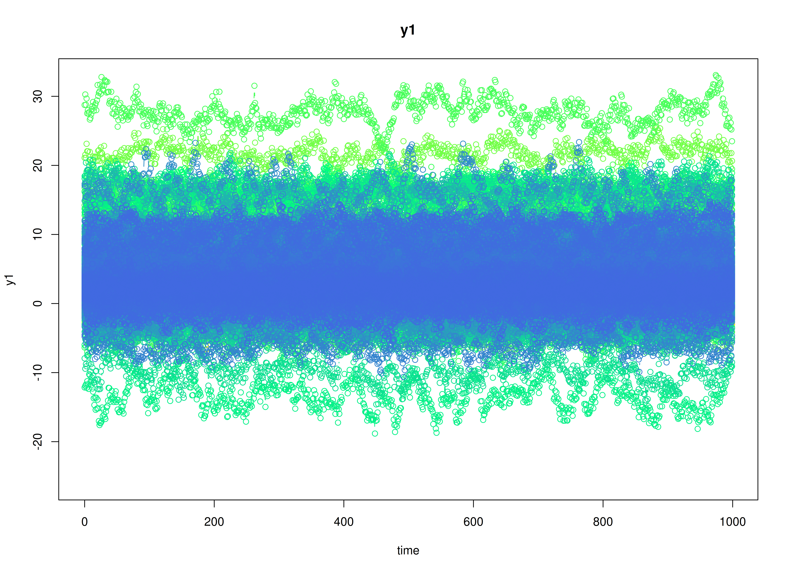

Meta-Regression with Distal Outcome
Ivan Jacob Agaloos Pesigan
2026-02-01
Source:vignettes/covariate-distal-1000.Rmd
covariate-distal-1000.RmdDynamics Description
The Stable Persistence with Baseline-Moderated Autoregression process represents a bivariate dynamic system in which two latent psychological constructs (e.g., positive and negative affect) exhibit within-construct persistence over time through autoregressive dynamics. The transition matrix is diagonal, implying that each construct evolves according to its own self-regulatory process and there are no cross-lagged (reciprocal) influences between the constructs in the systematic dynamics.
Between-person heterogeneity in persistence is captured via a time-invariant baseline covariate with one value per individual. The individual-specific transition matrix is modeled as so that individuals with follows , whereas individuals with follow . Under the current specification, increases the diagonal autoregressive parameters, implying that the group exhibits greater persistence—deviations from an individual’s equilibrium decay more slowly—while remaining dynamically stable.
Between-person heterogeneity in baseline levels is also captured via the same time-invariant covariate through the person-specific set-point vector so that individuals with follow , whereas individuals with follow .
In addition to explaining between-person differences in the DT-VAR parameters via the baseline covariate , we also include a distal outcome measured once per individual. Conceptually, can be interpreted as a later outcome (e.g., symptom severity, functioning, or substance use) whose between-person differences are partly explained by (a) each person’s estimated set-point and dynamic parameters and (b) .
The process noise covariance allows for small disturbances that may be correlated across constructs, permitting coordinated innovations even though the lagged dynamics are decoupled. Measurement errors are assumed to be minimal and symmetric across indicators.
Model
The measurement model is given by where , , and are random variables and , and are model parameters. represents a vector of observed random variables, a vector of latent random variables, and a vector of random measurement errors, at time and individual . denotes a matrix of factor loadings, and the covariance matrix of that is invariant across individuals. In this model, is an identity matrix and is a symmetric matrix.
The dynamic structure is given by where , , and are random variables, and , and are model parameters. Here, is a vector of latent variables at time and individual , represents a vector of latent variables at time and individual , and represents a vector of dynamic noise at time and individual . is a matrix of autoregression and cross regression coefficients for individual , and the covariance matrix of that is invariant across all individuals. In this model, is a symmetric matrix.
Alternative Parameterization
An alternative parameterization of the dynamic structure that directly estimates the set-point vector is given by
Algebraic manipulation of the equation results in the following where we can see that the intercept vector is implied by .
Distal outcome model
Let denote a distal outcome observed once per individual . We model as a linear function of (a) the person-specific DT-VAR parameters and (b) the baseline covariate : where is an intercept, is a vector of regression coefficients, is the direct effect of on , and is the residual variance of the distal outcome. The predictor vector stacks the person-specific DT-VAR coefficients and intercepts used for prediction. In this vignette we use so has length (here ).
Data Generation
Notation
Let be the number of time points and be the number of individuals. We simulate a total of time points per individual, discarding the first as burn-in. The analysis uses the final measurement occasions.
Let the factor loadings matrix be given by
Let the measurement error covariance matrix be given by
Let the initial condition be given by and are functions of and .
Let the intercept vector when be Let the intercept vector when be Let the covariance matrix be
Let the transition matrix when be Let the transition matrix when be Let the covariance matrix be and covariance matrix
The SimAlphaN and SimBetaNCovariate
functions from the simStateSpace package generate random
intercept vectors and transition matrices from the multivariate normal
distribution. Note that the SimBetaNCovariate function
generates transition matrices that are weakly stationary with an option
to set lower and upper bounds. The person-specific set-point vector
was derived from the generated
and
.
Let the dynamic process noise be given by
R Function Arguments
n
#> [1] 1000
time
#> [1] 11000
burnin
#> [1] 10000
# first mu0 in the list of length n
mu0[[1]]
#> [1] 0.7520376 -0.5127468
# first sigma0 in the list of length n
sigma0[[1]]
#> [,1] [,2]
#> [1,] 0.2787159 -0.1023574
#> [2,] -0.1023574 0.2538853
# first sigma0_l in the list of length n
sigma0_l[[1]] # sigma0_l <- t(chol(sigma0))
#> [,1] [,2]
#> [1,] 0.5279355 0.0000000
#> [2,] -0.1938823 0.4650752
# first alpha in the list of length n
alpha[[1]]
#> [1] 0.3319244 -0.1910529
# first beta in the list of length n
beta[[1]]
#> [,1] [,2]
#> [1,] 0.47646139 -0.1205201
#> [2,] -0.08920883 0.4965522
# first psi in the list of length n
psi[[1]]
#> [,1] [,2]
#> [1,] 0.20 -0.05
#> [2,] -0.05 0.18
psi_l[[1]] # psi_l <- t(chol(psi))
#> [,1] [,2]
#> [1,] 0.4472136 0.0000000
#> [2,] -0.1118034 0.4092676
nu
#> [[1]]
#> [1] 0 0
lambda
#> [[1]]
#> [,1] [,2]
#> [1,] 1 0
#> [2,] 0 1
theta
#> [[1]]
#> [,1] [,2]
#> [1,] 0.5 0.0
#> [2,] 0.0 0.5
theta_l # theta_l <- t(chol(theta))
#> [[1]]
#> [,1] [,2]
#> [1,] 0.7071068 0.0000000
#> [2,] 0.0000000 0.7071068
# first mu_eta (set-point) in the list of length n
mu_eta[[1]]
#> [1] 0.7520376 -0.5127468
# distal outcome parameters
kappa_z
#> [1] 10
phi_z
#> [,1] [,2] [,3] [,4] [,5] [,6]
#> [1,] 5 5 5 5 5 5
omega_z
#> [1] 0.15
psi_z
#> [1] 0.45Visualizing the Dynamics Without Process Noise and Measurement Error (n = 5 with Different Initial Condition)


Using the SimSSMIVary Function from the
simStateSpace Package to Simulate Data
library(simStateSpace)
sim <- SimSSMIVary(
n = n,
time = time,
mu0 = mu0,
sigma0_l = sigma0_l,
alpha = alpha,
beta = beta,
psi_l = psi_l,
nu = nu,
lambda = lambda,
theta_l = theta_l
)
data <- as.data.frame(sim, burnin = burnin)
head(data)
#> id time y1 y2
#> 1 1 0 -0.2039857 -0.5271213
#> 2 1 1 2.3635709 -0.8225477
#> 3 1 2 1.0336287 -1.3055546
#> 4 1 3 0.3748494 -0.1758500
#> 5 1 4 -0.6424827 -1.8117723
#> 6 1 5 1.0244405 -0.1976583
plot(sim, burnin = burnin)

Model Fitting
The FitDTVARMxID function fits a DT-VAR model on each
individual
.
To set up the estimation, we first provide starting
values for each parameter matrix.
Set-Point (mu_eta)
The set-point vector is initialized with starting values.
mu_eta_values <- mu_etaAutoregressive Parameters (beta)
We initialize the autoregressive coefficient matrix with the true values used in simulation.
beta_values <- betaLDL’-parameterized covariance matrices
Covariances such as psi and theta are
estimated using the LDL’ decomposition of a positive definite covariance
matrix. The decomposition expresses a covariance matrix
as
where: -
is a strictly lower-triangular matrix of free parameters
(l_mat_strict),
-
is the identity matrix,
-
is an unconstrained vector,
-
ensures strictly positive diagonal entries.
The LDL() function extracts this decomposition from a
positive definite covariance matrix. It returns:
- d_uc: unconstrained diagonal parameters, equal to
InvSoftplus(d_vec),
- d_vec: diagonal entries, equal to
Softplus(d_uc),
- l_mat_strict: the strictly lower-triangular factor.
sigma <- matrix(
data = c(1.0, 0.5, 0.5, 1.0),
nrow = 2,
ncol = 2
)
ldl_sigma <- LDL(sigma)
d_uc <- ldl_sigma$d_uc
l_mat_strict <- ldl_sigma$l_mat_strict
I <- diag(2)
sigma_reconstructed <- (l_mat_strict + I) %*% diag(log1p(exp(d_uc)), 2) %*% t(l_mat_strict + I)
sigma_reconstructed
#> [,1] [,2]
#> [1,] 1.0 0.5
#> [2,] 0.5 1.0Process Noise Covariance Matrix (psi)
Starting values for the process noise covariance matrix are given below, with corresponding LDL’ parameters.
psi_values <- psi[[1]]
ldl_psi_values <- LDL(psi_values)
psi_d_values <- ldl_psi_values$d_uc
psi_l_values <- ldl_psi_values$l_mat_strict
psi_d_values
#> [1] -1.507772 -1.701853
psi_l_values
#> [,1] [,2]
#> [1,] 0.00 0
#> [2,] -0.25 0Measurement Error Covariance Matrix (theta)
Starting values for the measurement error covariance matrix are given below, with corresponding LDL’ parameters.
theta_values <- theta[[1]]
ldl_theta_values <- LDL(theta_values)
theta_d_values <- ldl_theta_values$d_uc
theta_l_values <- ldl_theta_values$l_mat_strict
theta_d_values
#> [1] -0.4327521 -0.4327521
theta_l_values
#> [,1] [,2]
#> [1,] 0 0
#> [2,] 0 0Initial mean vector (mu_0) and covariance matrix
(sigma_0)
The initial mean vector
and covariance matrix
are fixed using mu0 and sigma0.
mu0_values <- mu0
FitDTVARMxID
fit <- FitDTVARMxID(
data = data,
observed = c("y1", "y2"),
id = "id",
center = TRUE,
mu_eta_values = mu_eta_values,
beta_values = beta_values,
psi_d_values = psi_d_values,
psi_l_values = psi_l_values,
theta_d_values = theta_d_values,
mu0_values = mu0_values,
sigma0_d_values = sigma0_d_values,
sigma0_l_values = sigma0_l_values,
ncores = parallel::detectCores()
)Parameter estimates
head(summary(fit))
#> beta_1_1 beta_2_1 beta_1_2 beta_2_2
#> FitDTVARMxID_DTVAR_ID1.Rds 0.7356647 -0.03709508 0.124911294 0.6075660
#> FitDTVARMxID_DTVAR_ID2.Rds 0.3932550 0.33128856 0.070209848 0.6452306
#> FitDTVARMxID_DTVAR_ID3.Rds 0.3667931 0.17275648 0.005867861 0.6412371
#> FitDTVARMxID_DTVAR_ID4.Rds 0.4814453 -0.20665773 -0.083737394 0.1282792
#> FitDTVARMxID_DTVAR_ID5.Rds 0.3894912 -0.09250685 0.029823476 0.5788790
#> FitDTVARMxID_DTVAR_ID6.Rds 0.1466637 -0.04662990 0.044473537 0.3646829
#> mu_eta_1_1 mu_eta_2_1 psi_l_2_1 psi_d_1_1
#> FitDTVARMxID_DTVAR_ID1.Rds 0.7429922 -0.5422434386 -0.64137358 -2.09263860
#> FitDTVARMxID_DTVAR_ID2.Rds 2.1089697 -0.9809131058 -0.37478408 -1.74439266
#> FitDTVARMxID_DTVAR_ID3.Rds 0.9790736 -1.7645485016 -0.26088418 -1.21125563
#> FitDTVARMxID_DTVAR_ID4.Rds 1.5471235 -0.7583743612 -0.05025920 -1.63597326
#> FitDTVARMxID_DTVAR_ID5.Rds 0.8140559 -0.0001548687 -0.11296257 -0.87220954
#> FitDTVARMxID_DTVAR_ID6.Rds 0.6719574 -1.2148346783 -0.09648513 0.02601587
#> psi_d_2_1 theta_d_1_1 theta_d_2_1
#> FitDTVARMxID_DTVAR_ID1.Rds -2.44661974 -0.3062973 -0.2501242
#> FitDTVARMxID_DTVAR_ID2.Rds -2.01994760 -0.2184480 -0.3630670
#> FitDTVARMxID_DTVAR_ID3.Rds -1.83009313 -0.7312709 -0.5093707
#> FitDTVARMxID_DTVAR_ID4.Rds 0.08626565 -0.3614859 -14.3344963
#> FitDTVARMxID_DTVAR_ID5.Rds -1.77703664 -0.7189124 -0.6065102
#> FitDTVARMxID_DTVAR_ID6.Rds -0.80564615 -17.1757445 -0.8495140Proportion of converged cases
converged(
fit,
theta_tol = 0.01,
prop = TRUE
)
#> [1] 0.903Fixed-Effect Meta-Analysis of Measurement Error
When fitting DT-VAR models per person, separating process noise () from measurement error () can be unstable for some individuals. To stabilize inference, we first pool the person-level estimates from only the converged fits using a fixed-effect meta-analysis. This yields a high-precision estimate of the common measurement-error covariance that we will then hold fixed in a second pass of model fitting.
What the code does: - Selects individuals that converged and whose
diagonals exceed a small threshold (theta_tol), filtering
out near-zero or ill-conditioned solutions. - Extracts each person’s
LDL’ diagonal parameters for
and their sampling covariance matrices. - Computes the
inverse-variance-weighted pooled estimate (fixed effect), returning it
on the same LDL’ parameterization used by
FitDTVARMxID().
library(metaDyn)
fixed_theta <- MetaVARMx(
fit,
random = FALSE, # TRUE by default
effects = FALSE, # TRUE by default
cov_meas = TRUE, # FALSE by default
theta_tol = 0.01,
ncores = parallel::detectCores()
)You can read summary(fixed_theta) as providing the
pooled (fixed) measurement-error scale that is common across persons. If
individual instruments truly share the same reliability structure,
fixing
to this pooled value improves stability and often reduces bias in the
dynamic parameters.
Note: Fixed-effect pooling assumes a common across individuals.
coef(fixed_theta)
#> alpha_1_1 alpha_2_1
#> -0.3799746 -0.3850024
summary(fixed_theta)
#> [1] 0
#> Call:
#> MetaVARMx(object = fit, random = FALSE, effects = FALSE, cov_meas = TRUE,
#> theta_tol = 0.01, ncores = parallel::detectCores())
#>
#> CI type = "normal"
#> est se z p 2.5% 97.5%
#> alpha[1,1] -0.380 0.0045 -84.0864 0 -0.3888 -0.3711
#> alpha[2,1] -0.385 0.0043 -88.7342 0 -0.3935 -0.3765
theta_d_values <- coef(fixed_theta)Refit the model with fixed measurement error covariance matrix
We refit the individual models using the pooled as a fixed measurement-error covariance matrix.
fit <- FitDTVARMxID(
data = data,
observed = c("y1", "y2"),
id = "id",
center = TRUE,
mu_eta_values = mu_eta_values,
beta_values = beta_values,
psi_d_values = psi_d_values,
psi_l_values = psi_l_values,
theta_fixed = TRUE,
theta_d_values = theta_d_values,
mu0_values = mu0_values,
sigma0_d_values = sigma0_d_values,
sigma0_l_values = sigma0_l_values,
ncores = parallel::detectCores()
)With fixed, the re-estimation focuses on the dynamic structure (, , ). In practice, this often increases the proportion of converged fits and yields more stable cross-lag estimates.
Proportion of converged cases
converged(
fit,
prop = TRUE
)
#> [1] 1Mixed-Effects Meta-Analysis with Distal Outcome of Person-Specific Dynamics and Means
Having stabilized , we synthesize the person-specific estimates to recover population-level effects, between-person variability, and systematic covariate-related differences. We fit a mixed-effects meta-analytic model in which each individual’s estimate is weighted by its within-person sampling uncertainty, random effects capture residual heterogeneity across individuals, and fixed effects quantify the association between covariate and the person-specific dynamic parameters as well as effects on a distal outcome.
random <- MetaVARMx(
fit,
x = x,
z = z,
effects = TRUE,
set_point = TRUE,
robust_v = FALSE,
robust = TRUE,
ncores = parallel::detectCores()
)
summary(random)
#> [1] 0
#> Call:
#> MetaVARMx(object = fit, x = x, z = z, effects = TRUE, set_point = TRUE,
#> robust_v = FALSE, robust = TRUE, ncores = parallel::detectCores())
#>
#> CI type = "normal"
#> est se z p 2.5% 97.5%
#> alpha[1,1] 1.0304 0.1203 8.5661 0.0000 0.7947 1.2662
#> alpha[2,1] -1.0166 0.1187 -8.5671 0.0000 -1.2492 -0.7841
#> alpha[3,1] 0.5512 0.0061 89.8970 0.0000 0.5392 0.5633
#> alpha[4,1] 0.0204 0.0059 3.4430 0.0006 0.0088 0.0321
#> alpha[5,1] 0.0208 0.0055 3.7539 0.0002 0.0099 0.0316
#> alpha[6,1] 0.5548 0.0058 95.0284 0.0000 0.5434 0.5662
#> gamma[1,1] 2.2504 0.1702 13.2254 0.0000 1.9169 2.5839
#> gamma[2,1] -2.4506 0.1679 -14.5969 0.0000 -2.7797 -2.1216
#> gamma[3,1] 0.1982 0.0081 24.5164 0.0000 0.1824 0.2141
#> gamma[4,1] -0.0394 0.0078 -5.0169 0.0000 -0.0547 -0.0240
#> gamma[5,1] -0.0140 0.0071 -1.9702 0.0488 -0.0278 -0.0001
#> gamma[6,1] 0.2054 0.0075 27.2734 0.0000 0.1906 0.2202
#> kappa[1,1] 9.8547 0.1296 76.0346 0.0000 9.6006 10.1087
#> phi[1,1] 4.9958 0.0095 528.1960 0.0000 4.9773 5.0144
#> phi[1,2] 5.0136 0.0096 524.6785 0.0000 4.9949 5.0324
#> phi[1,3] 5.1450 0.1712 30.0444 0.0000 4.8093 5.4806
#> phi[1,4] 4.8677 0.1714 28.4060 0.0000 4.5318 5.2035
#> phi[1,5] 4.8221 0.1856 25.9876 0.0000 4.4584 5.1858
#> phi[1,6] 5.1816 0.1747 29.6553 0.0000 4.8391 5.5240
#> omega[1,1] 0.1571 0.0714 2.2009 0.0277 0.0172 0.2970
#> psi[1,1] 0.4670 0.0209 22.3583 0.0000 0.4261 0.5080
#> tau_sqr[1,1] 7.2471 0.3255 22.2614 0.0000 6.6091 7.8852
#> tau_sqr[2,1] 2.1395 0.2368 9.0359 0.0000 1.6754 2.6036
#> tau_sqr[3,1] 0.1274 0.0106 11.9767 0.0000 0.1066 0.1483
#> tau_sqr[4,1] 0.0747 0.0098 7.5956 0.0000 0.0554 0.0939
#> tau_sqr[5,1] -0.1148 0.0092 -12.4251 0.0000 -0.1329 -0.0967
#> tau_sqr[6,1] -0.0644 0.0094 -6.8529 0.0000 -0.0829 -0.0460
#> tau_sqr[2,2] 7.0474 0.3162 22.2897 0.0000 6.4278 7.6671
#> tau_sqr[3,2] 0.0632 0.0101 6.2641 0.0000 0.0434 0.0829
#> tau_sqr[4,2] 0.1344 0.0105 12.8141 0.0000 0.1138 0.1549
#> tau_sqr[5,2] -0.0516 0.0083 -6.2242 0.0000 -0.0679 -0.0354
#> tau_sqr[6,2] -0.1101 0.0095 -11.6039 0.0000 -0.1287 -0.0915
#> tau_sqr[3,3] 0.0123 0.0007 16.9726 0.0000 0.0109 0.0137
#> tau_sqr[4,3] 0.0061 0.0005 11.4198 0.0000 0.0051 0.0072
#> tau_sqr[5,3] -0.0016 0.0004 -3.6236 0.0003 -0.0024 -0.0007
#> tau_sqr[6,3] -0.0007 0.0005 -1.5101 0.1310 -0.0016 0.0002
#> tau_sqr[4,4] 0.0116 0.0007 16.8124 0.0000 0.0103 0.0130
#> tau_sqr[5,4] -0.0026 0.0004 -6.3546 0.0000 -0.0034 -0.0018
#> tau_sqr[6,4] -0.0017 0.0004 -3.8649 0.0001 -0.0026 -0.0009
#> tau_sqr[5,5] 0.0083 0.0005 15.6871 0.0000 0.0073 0.0093
#> tau_sqr[6,5] 0.0032 0.0004 7.7167 0.0000 0.0024 0.0040
#> tau_sqr[6,6] 0.0100 0.0006 16.1503 0.0000 0.0088 0.0112
#> i_sqr[1,1] 0.9998 0.0000 97223.5559 0.0000 0.9998 0.9998
#> i_sqr[2,1] 0.9998 0.0000 105463.0328 0.0000 0.9998 0.9998
#> i_sqr[3,1] 0.9131 0.0047 195.3185 0.0000 0.9039 0.9222
#> i_sqr[4,1] 0.9279 0.0038 241.1741 0.0000 0.9204 0.9354
#> i_sqr[5,1] 0.8770 0.0068 129.3072 0.0000 0.8637 0.8903
#> i_sqr[6,1] 0.9093 0.0050 181.2682 0.0000 0.8994 0.9191Normal Theory Confidence Intervals
confint(random, level = 0.95, lb = FALSE)
#> 2.5 % 97.5 %
#> alpha[1,1] 0.794653461 1.266180e+00
#> alpha[2,1] -1.249233807 -7.840622e-01
#> alpha[3,1] 0.539215888 5.632523e-01
#> alpha[4,1] 0.008798324 3.205394e-02
#> alpha[5,1] 0.009918117 3.158959e-02
#> alpha[6,1] 0.543357305 5.662429e-01
#> gamma[1,1] 1.916909586 2.583920e+00
#> gamma[2,1] -2.779692578 -2.121586e+00
#> gamma[3,1] 0.182393535 2.140905e-01
#> gamma[4,1] -0.054730821 -2.398060e-02
#> gamma[5,1] -0.027845568 -7.228428e-05
#> gamma[6,1] 0.190637948 2.201593e-01
#> kappa[1,1] 9.600634345 1.010869e+01
#> phi[1,1] 4.977307339 5.014383e+00
#> phi[1,2] 4.994921207 5.032379e+00
#> phi[1,3] 4.809346101 5.480618e+00
#> phi[1,4] 4.531796314 5.203517e+00
#> phi[1,5] 4.458398341 5.185753e+00
#> phi[1,6] 4.839105476 5.524020e+00
#> omega[1,1] 0.017194402 2.969600e-01
#> psi[1,1] 0.426086101 5.079668e-01
#> tau_sqr[1,1] 6.609056306 7.885173e+00
#> tau_sqr[2,1] 1.675447161 2.603614e+00
#> tau_sqr[3,1] 0.106561936 1.482636e-01
#> tau_sqr[4,1] 0.055400485 9.393499e-02
#> tau_sqr[5,1] -0.132882306 -9.667178e-02
#> tau_sqr[6,1] -0.082871993 -4.601097e-02
#> tau_sqr[2,2] 6.427755543 7.667138e+00
#> tau_sqr[3,2] 0.043410224 8.294499e-02
#> tau_sqr[4,2] 0.113833075 1.549432e-01
#> tau_sqr[5,2] -0.067856242 -3.535541e-02
#> tau_sqr[6,2] -0.128699525 -9.150555e-02
#> tau_sqr[3,3] 0.010897632 1.374310e-02
#> tau_sqr[4,3] 0.005064895 7.163656e-03
#> tau_sqr[5,3] -0.002427322 -7.232387e-04
#> tau_sqr[6,3] -0.001612093 2.089944e-04
#> tau_sqr[4,4] 0.010253963 1.296024e-02
#> tau_sqr[5,4] -0.003406650 -1.800565e-03
#> tau_sqr[6,4] -0.002615428 -8.553284e-04
#> tau_sqr[5,5] 0.007265673 9.340461e-03
#> tau_sqr[6,5] 0.002401384 4.036557e-03
#> tau_sqr[6,6] 0.008751158 1.116856e-02
#> i_sqr[1,1] 0.999750866 9.997912e-01
#> i_sqr[2,1] 0.999770119 9.998073e-01
#> i_sqr[3,1] 0.903893892 9.222184e-01
#> i_sqr[4,1] 0.920350982 9.354325e-01
#> i_sqr[5,1] 0.863719394 8.903059e-01
#> i_sqr[6,1] 0.899439670 9.191027e-01
confint(random, level = 0.99, lb = FALSE)
#> 0.5 % 99.5 %
#> alpha[1,1] 0.720571231 1.3402624980
#> alpha[2,1] -1.322317562 -0.7109784506
#> alpha[3,1] 0.535439500 0.5670286504
#> alpha[4,1] 0.005144601 0.0357076653
#> alpha[5,1] 0.006513282 0.0349944230
#> alpha[6,1] 0.539761725 0.5698384335
#> gamma[1,1] 1.812114722 2.6887144369
#> gamma[2,1] -2.883088644 -2.0181897489
#> gamma[3,1] 0.177413585 0.2190704212
#> gamma[4,1] -0.059562031 -0.0191493892
#> gamma[5,1] -0.032209067 0.0042912148
#> gamma[6,1] 0.185999804 0.2247974692
#> kappa[1,1] 9.520813513 10.1885076763
#> phi[1,1] 4.971482290 5.0202083094
#> phi[1,2] 4.989036207 5.0382637099
#> phi[1,3] 4.703881571 5.5860829782
#> phi[1,4] 4.426261380 5.3090517148
#> phi[1,5] 4.344122719 5.3000281280
#> phi[1,6] 4.731497684 5.6316272938
#> omega[1,1] -0.026759958 0.3409143557
#> psi[1,1] 0.413221707 0.5208312237
#> tau_sqr[1,1] 6.408563796 8.0856658075
#> tau_sqr[2,1] 1.529621651 2.7494390719
#> tau_sqr[3,1] 0.100010123 0.1548154569
#> tau_sqr[4,1] 0.049346275 0.0999891984
#> tau_sqr[5,1] -0.138571392 -0.0909826932
#> tau_sqr[6,1] -0.088663280 -0.0402196778
#> tau_sqr[2,2] 6.233034460 7.8618589977
#> tau_sqr[3,2] 0.037198863 0.0891563499
#> tau_sqr[4,2] 0.107374198 0.1614021248
#> tau_sqr[5,2] -0.072962493 -0.0302491547
#> tau_sqr[6,2] -0.134543122 -0.0856619531
#> tau_sqr[3,3] 0.010450578 0.0141901505
#> tau_sqr[4,3] 0.004735156 0.0074933957
#> tau_sqr[5,3] -0.002695053 -0.0004555077
#> tau_sqr[6,3] -0.001898206 0.0004951080
#> tau_sqr[4,4] 0.009828776 0.0133854275
#> tau_sqr[5,4] -0.003658984 -0.0015482304
#> tau_sqr[6,4] -0.002891960 -0.0005787967
#> tau_sqr[5,5] 0.006939701 0.0096664334
#> tau_sqr[6,5] 0.002144479 0.0042934613
#> tau_sqr[6,6] 0.008371356 0.0115483650
#> i_sqr[1,1] 0.999744533 0.9997975088
#> i_sqr[2,1] 0.999764280 0.9998131180
#> i_sqr[3,1] 0.901014905 0.9250973791
#> i_sqr[4,1] 0.917981506 0.9378019635
#> i_sqr[5,1] 0.859542352 0.8944829411
#> i_sqr[6,1] 0.896350388 0.9221919553Robust Confidence Intervals
confint(random, level = 0.95, lb = FALSE, robust = TRUE)
#> 2.5 % 97.5 %
#> alpha[1,1] 0.953425643 1.1074080860
#> alpha[2,1] -1.093396425 -0.9398995874
#> alpha[3,1] 0.538442780 0.5640253702
#> alpha[4,1] 0.008413730 0.0324385360
#> alpha[5,1] 0.009662120 0.0318455849
#> alpha[6,1] 0.542474411 0.5671257467
#> gamma[1,1] 1.915960339 2.5848688196
#> gamma[2,1] -2.780316719 -2.1209616735
#> gamma[3,1] 0.182060020 0.2144239861
#> gamma[4,1] -0.054980835 -0.0237305850
#> gamma[5,1] -0.028209414 0.0002915618
#> gamma[6,1] 0.190197198 0.2206000754
#> kappa[1,1] 9.611646034 10.0976751555
#> phi[1,1] 4.978260754 5.0134298452
#> phi[1,2] 4.996829230 5.0304706860
#> phi[1,3] 4.815119167 5.4748453819
#> phi[1,4] 4.531853263 5.2034598314
#> phi[1,5] 4.461931537 5.1822193100
#> phi[1,6] 4.851228838 5.5118961400
#> omega[1,1] 0.019405509 0.2947488892
#> psi[1,1] 0.426074216 0.5079787149
#> tau_sqr[1,1] 5.386158885 9.1080707184
#> tau_sqr[2,1] 0.944240352 3.3348203705
#> tau_sqr[3,1] 0.100884302 0.1539412777
#> tau_sqr[4,1] 0.053777574 0.0955578996
#> tau_sqr[5,1] -0.138085216 -0.0914688684
#> tau_sqr[6,1] -0.085067112 -0.0438158464
#> tau_sqr[2,2] 5.455383410 8.6395100476
#> tau_sqr[3,2] 0.036186450 0.0901687631
#> tau_sqr[4,2] 0.104966260 0.1638100629
#> tau_sqr[5,2] -0.070738292 -0.0324733560
#> tau_sqr[6,2] -0.130798838 -0.0894062370
#> tau_sqr[3,3] 0.010887396 0.0137533326
#> tau_sqr[4,3] 0.004985214 0.0072433374
#> tau_sqr[5,3] -0.002448367 -0.0007021936
#> tau_sqr[6,3] -0.001610069 0.0002069709
#> tau_sqr[4,4] 0.010176565 0.0130376382
#> tau_sqr[5,4] -0.003434046 -0.0017731693
#> tau_sqr[6,4] -0.002583464 -0.0008872930
#> tau_sqr[5,5] 0.007327345 0.0092787890
#> tau_sqr[6,5] 0.002324928 0.0041130128
#> tau_sqr[6,6] 0.008600421 0.0113192994
#> i_sqr[1,1] 0.999712238 0.9998298041
#> i_sqr[2,1] 0.999739003 0.9998383952
#> i_sqr[3,1] 0.903826025 0.9222862590
#> i_sqr[4,1] 0.919808364 0.9359751059
#> i_sqr[5,1] 0.864407577 0.8896177156
#> i_sqr[6,1] 0.898003554 0.9205387895
confint(random, level = 0.99, lb = FALSE, robust = TRUE)
#> 0.5 % 99.5 %
#> alpha[1,1] 0.929233247 1.1316004812
#> alpha[2,1] -1.117512526 -0.9157834863
#> alpha[3,1] 0.534423464 0.5680446864
#> alpha[4,1] 0.004639160 0.0362131066
#> alpha[5,1] 0.006176846 0.0353308598
#> alpha[6,1] 0.538601406 0.5709987521
#> gamma[1,1] 1.810867200 2.6899619585
#> gamma[2,1] -2.883908905 -2.0173694880
#> gamma[3,1] 0.176975272 0.2195087337
#> gamma[4,1] -0.059890606 -0.0188208148
#> gamma[5,1] -0.032687242 0.0047693897
#> gamma[6,1] 0.185420559 0.2253767137
#> kappa[1,1] 9.535285324 10.1740358649
#> phi[1,1] 4.972735289 5.0189553099
#> phi[1,2] 4.991543775 5.0357561418
#> phi[1,3] 4.711468667 5.5784958823
#> phi[1,4] 4.426336224 5.3089768707
#> phi[1,5] 4.348766126 5.2953847208
#> phi[1,6] 4.747430482 5.6156944960
#> omega[1,1] -0.023854072 0.3380084696
#> psi[1,1] 0.413206086 0.5208468443
#> tau_sqr[1,1] 4.801404156 9.6928254477
#> tau_sqr[2,1] 0.568653010 3.7104077122
#> tau_sqr[3,1] 0.092548447 0.1622771328
#> tau_sqr[4,1] 0.047213409 0.1021220644
#> tau_sqr[5,1] -0.145409176 -0.0841449093
#> tau_sqr[6,1] -0.091548155 -0.0373348029
#> tau_sqr[2,2] 4.955120859 9.1397725991
#> tau_sqr[3,2] 0.027705213 0.0986499992
#> tau_sqr[4,2] 0.095721229 0.1730550944
#> tau_sqr[5,2] -0.076750149 -0.0264614989
#> tau_sqr[6,2] -0.137302087 -0.0829029880
#> tau_sqr[3,3] 0.010437124 0.0142036039
#> tau_sqr[4,3] 0.004630437 0.0075981143
#> tau_sqr[5,3] -0.002722711 -0.0004278498
#> tau_sqr[6,3] -0.001895547 0.0004924486
#> tau_sqr[4,4] 0.009727058 0.0134871454
#> tau_sqr[5,4] -0.003694988 -0.0015122267
#> tau_sqr[6,4] -0.002849951 -0.0006208052
#> tau_sqr[5,5] 0.007020751 0.0095853831
#> tau_sqr[6,5] 0.002043999 0.0043939413
#> tau_sqr[6,6] 0.008173255 0.0117464661
#> i_sqr[1,1] 0.999693767 0.9998482751
#> i_sqr[2,1] 0.999723387 0.9998540109
#> i_sqr[3,1] 0.900925712 0.9251865720
#> i_sqr[4,1] 0.917268384 0.9385150851
#> i_sqr[5,1] 0.860446777 0.8935785154
#> i_sqr[6,1] 0.894463012 0.9240793317Profile-Likelihood Confidence Intervals
confint(random, level = 0.95, lb = TRUE)
#> Error in `[.data.frame`:
#> ! undefined columns selected
confint(random, level = 0.99, lb = TRUE)
#> Error in `[.data.frame`:
#> ! undefined columns selected- The fixed part of the random-effects model gives pooled means for the person-specific parameters (e.g., and ) and fixed effects for how shifts these parameters.
- The random part yields between-person covariances () quantifying residual heterogeneity in dynamics and intercepts beyond what is explained by .
- The distal-outcome sub-model yields regression effects linking the the estimated person-specific parameters (via ) to distal outcome , a direct effect of on (via ), and the residual variance .
means <- extract(random, what = "alpha")
means
#> [1] 1.03041686 -1.01664801 0.55123408 0.02042613 0.02075385 0.55480008
covariances <- extract(random, what = "tau_sqr")
covariances
#> [,1] [,2] [,3] [,4] [,5]
#> [1,] 7.24711480 2.13953036 0.1274127898 0.074667737 -0.114777042
#> [2,] 2.13953036 7.04744673 0.0631776064 0.134388162 -0.051605824
#> [3,] 0.12741279 0.06317761 0.0123203641 0.006114276 -0.001575280
#> [4,] 0.07466774 0.13438816 0.0061142756 0.011607102 -0.002603607
#> [5,] -0.11477704 -0.05160582 -0.0015752805 -0.002603607 0.008303067
#> [6,] -0.06444148 -0.11010254 -0.0007015493 -0.001735378 0.003218970
#> [,6]
#> [1,] -0.0644414791
#> [2,] -0.1101025376
#> [3,] -0.0007015493
#> [4,] -0.0017353783
#> [5,] 0.0032189703
#> [6,] 0.0099598603Finally, we compare the meta-analytic population estimates to the known generating values.
pop_mean
#> [1] 2.25717566 -2.11275830 0.61362799 -0.00661199 -0.00502123 0.61560881
pop_cov
#> [,1] [,2] [,3] [,4] [,5]
#> [1,] 7.87336834 0.88804821 0.273086594 0.0638425889 -0.0915731218
#> [2,] 0.88804821 8.36786378 -0.036344806 0.1331000366 -0.0374675414
#> [3,] 0.27308659 -0.03634481 0.030143625 0.0079252730 -0.0011555838
#> [4,] 0.06384259 0.13310004 0.007925273 0.0139995106 -0.0006635365
#> [5,] -0.09157312 -0.03746754 -0.001155584 -0.0006635365 0.0097715146
#> [6,] 0.09000510 -0.23694437 0.012738301 -0.0012966040 0.0040795653
#> [,6]
#> [1,] 0.090005095
#> [2,] -0.236944365
#> [3,] 0.012738301
#> [4,] -0.001296604
#> [5,] 0.004079565
#> [6,] 0.027041975Summary
This vignette demonstrates a two-stage hierarchical estimation approach for dynamic systems: 1. Individual-level DT-VAR estimation with stabilized measurement error. 2. Population-level meta-analysis of person-specific dynamics and means. 3. Estimation and interpretation of covariate effects, where predicts systematic between-person differences in dynamics and baseline levels. 4. A distal outcome model linking to person-specific dynamic/mean features and to .